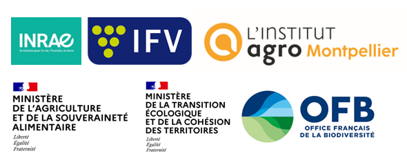

Introduction
Malgré les différentes incitations à réduire l’usage des produits phytosanitaires (PP), le secteur viticole reste très consommateur en pesticides. Pour répondre à cet enjeu, le projet Ripp-Viti “Réduire les impacts des produits phytosanitaires en viticulture méridionale à l’échelle territoriale”, (Ecophyto Recherche & Innovation 2020 - 2023) a élaboré de nouvelles stratégies de réduction d’usage et d’impact des PP en milieu viticole. Le projet a été conduit sur le bassin versant du Rieutort (Hérault).
Les stratégies proposées sont territorialisées, durables et acceptables par la diversité des acteurs agricole. Elles reposent sur trois principes :
la combinaison de leviers de réduction d’usage à l’échelle parcellaire (ex.: conduite bas-intrants, biocontrôle) avec l’implantation de zones tampons limitant la dispersion des PP à l’échelle paysagère,
la modulation territoriale des leviers parcellaires en fonction des contraintes d’exploitation viticole (ex. sol, climat, objectifs de rendements) afin de favoriser l’acceptabilité et la durabilité des leviers envisagés,
la mise en place d’une approche participative à l’échelle territoriale pour définir les règles de modulation des leviers ainsi que les objectifs de réduction d’impact collectif sur les écosystèmes et les riverains. La démarche participative associe un groupe d’acteurs viticoles et un groupe d’experts (agronomes, hydrologues…).
Vous trouverez sur ce site des fiches pratiques issues des travaux réalisées par les partenaires du projet Ripp-Viti. Ces fiches ont vocation à faciliter l’appropriation des résultats du projet par les professionnels (viticulteurs, conseillers techniques, animateurs de collectif…).
L’ensemble est constitué de deux types de fiches:
Des fiches “Leviers” décrivent les intérêts agronomiques et environnementaux de chaque levier de réduction d’usage des PP proposés dans le jeu sérieux.
Des Fiches “Exploitations” détaillent et évaluent les combinaisons de leviers proposées lors du jeu sérieux pour chaque exploitation type du bassin versant. Les professionnels peuvent ainsi consulter la fiche de l’exploitation la plus proche de la leur et s’approprier les résultats, tout en se référant aux fiches leviers pour plus d’information.
Les fiches sont consultables en ligne et téléchargeables en pdf.
Partenaires :
- UMR LISAH
- UMR Absys
- UMR Ecosys
- UMR ITAP
- UMR Innovation
- Chambre Régionale d’Agriculture Occitanie
- Captages Eau’ccitanie
- EPTB Orb & Libron
- Agence de l’Eau Rhône-Méditerranée-Corse
- Institut Français de la Vigne et du Vin
Financement : Ecophyto Recherche & Innovation, Office Français de la Biodiversité.
